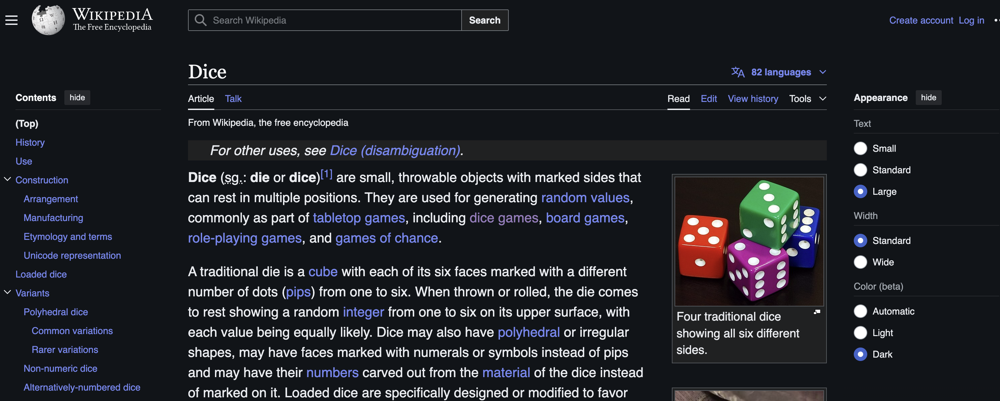

위키피디아의 Appearance UI에 대한 생각
주사위에 대한 내용을 찾다가 wikipedia에 접속했다.
그런데 전에 보지 못한 Appearance라는 섹션이 보였다.

보통 모바일 앱에서는 설정이라는 항목에서 찾을 수 있는 옵션인데 웹에서 즉각적으로 폰트 크기, 테마, 폭을 조정할 수 있게 한 UI는 자주 보지 못했다.
일반적인 웹사이트들은 큰 필요성을 못 느낄 수 있는데 블로그나 뉴스 웹사이트들은 매우 유용한 기능이라 생각했다.
좀 더 찾아보니 이 기능은 이미 2022년에 개발되어 위키피디아 로그인한 사용자들은 이용할 수 있었다.
그런데 2024년 5월에 Wikimedia Foundation Web team이 본 기능을 로그아웃된 사용자에게 노출하는 변경에 대해 언급한 내용을 찾을 수 있었다.
난 위키피디아에 계정이 없고 로그인할 생각도 해본 적이 없다.
어떤 정보를 검색엔진에 검색할 때 함께 나오던 위키피디아에 좋은 정보가 있으면 방문할 뿐이었다.
일반적인 사용자에게 이 Appearance UI는 매우 좋은 기능이다. 특히 테마를 바꾸는 기능과 줌없이 폰트 크기를 바꾸는 기능이 그렇다.
위키피디아는 이용자가 설정한 정보를 쿠키에 enwikimwclientpreferences라는 항목으로 저장해두기 때문에 Private 모드가 아니라면 재접속 시 설정이 유지된다.
블로그에 추가할만한 기능이라 생각되서 개발자 툴에서 wikipedia 소스를 보고 비슷하게 구현을 해보았다.
간단해보여서 바닐라 JS로 했는데 전체적으로 React로 하면 더 코드량이 줄어들어 같다.